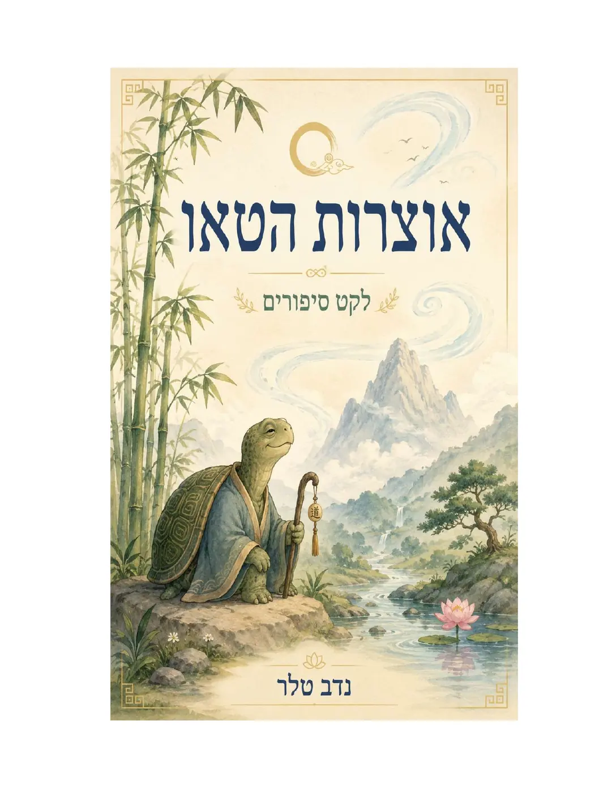
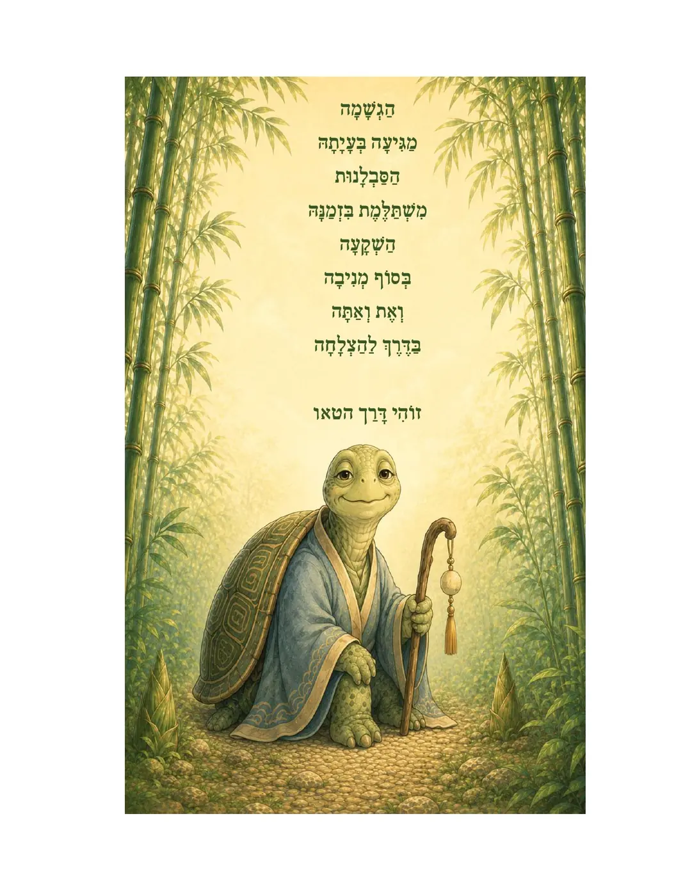

הליכה יומית — 30 דקות ביום, צעד רך, רציף וטבעי.
החלק הרך של היצירה: ספרי ילדים, סיפורים על טבע וסבלנות, לצד ספר יסוד שמחזיר את האדם לגוף, לנשימה ולתודעת העד.

ספר יסוד מציג דרך מעשית: יציבה נכונה, תרגול מפרקים, הליכה יומית, נשימה ותודעת העד. לא תיאוריה רחוקה — אלא תרגול יומי שאפשר להתחיל ממנו עכשיו.
לספר יסוד באמזון

סיפור על צמיחה נסתרת: לפעמים שום דבר לא נראה מבחוץ, אבל בפנים השורשים נבנים.
לספר בעבריתספר ילדים על נשימה, רוגע, קצב פנימי וחזרה אל הגוף דרך דימוי וסיפור.
לספר בעבריתחיבור בין יציבה, תנועה, נשימה ותודעת העד — בסיס לתרגול עצמי ולבוט לימודי.
לספר באמזון